Fotografía
Retrato creativo, marca personal, producto y contenido editorial con una mirada natural y dinámica.
Crear una sesión →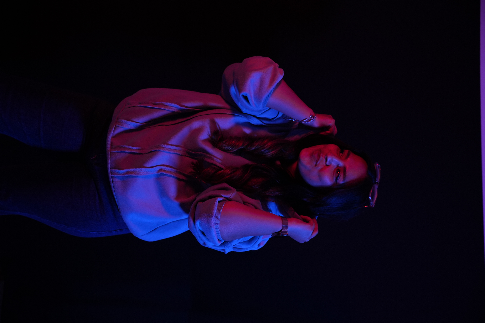
LAURA · PRODUCTORA MULTIMEDIA
Fotografía · Branding · Ilustración · Web
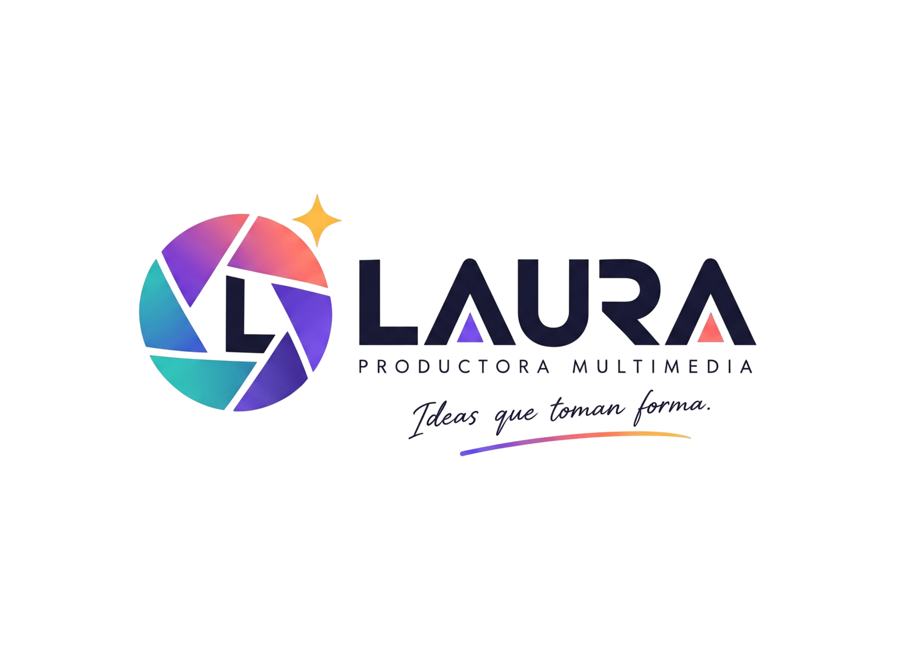
Creo universos visuales auténticos para personas y marcas que quieren conectar, destacar y crecer.
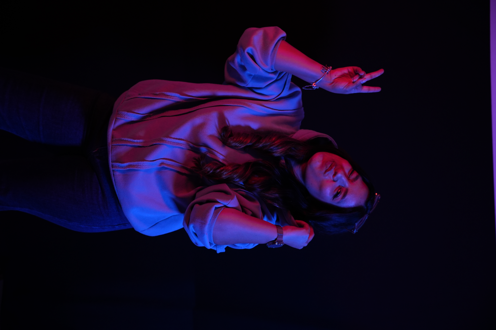
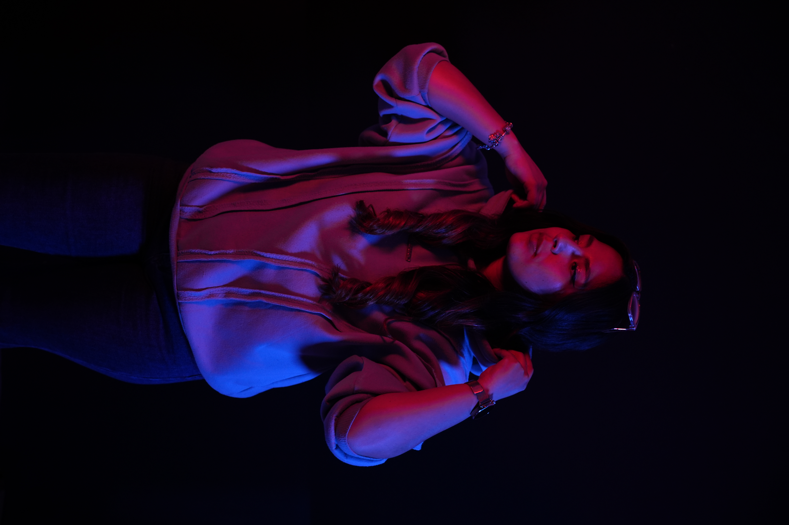
Soy Laura, productora multimedia. La fotografía es mi punto de partida para descubrir historias; el branding les da identidad, la ilustración amplía sus posibilidades y el diseño web las convierte en experiencias funcionales.
Trabajo con una mirada diligente, cercana y flexible para que cada proyecto tenga una voz propia y se adapte a las personas que necesita conectar.
Cada servicio puede funcionar de forma independiente o integrarse en una solución completa.
Retrato creativo, marca personal, producto y contenido editorial con una mirada natural y dinámica.
Crear una sesión →Personajes, piezas editoriales, stickers y recursos gráficos que aportan personalidad.
Ilustrar una idea →Landing pages y portafolios responsivos, accesibles y preparados para comunicar con claridad.
Crear un sitio →Estrategia, logotipo, paleta y sistemas visuales que convierten una esencia en una marca reconocible.
Construir una marca →Estrategia, símbolo y sistema social para un emprendimiento creativo.
Ver manual de marca →Diseño mobile-first, arquitectura clara y narrativa enfocada en proyectos.
Ver proyecto web →Una selección de ocho fotografías que explora naturaleza, color, producto y escenas urbanas.
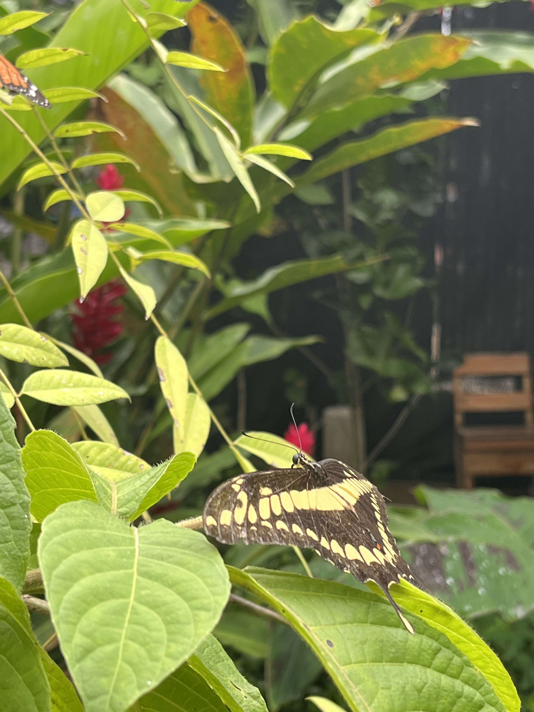
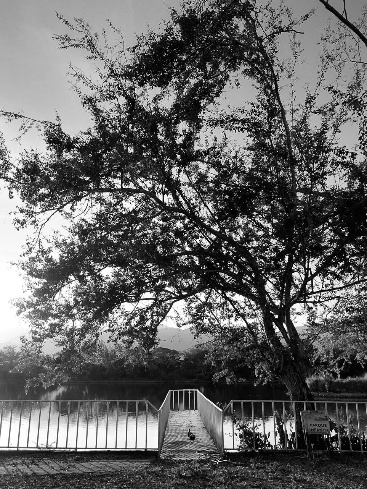
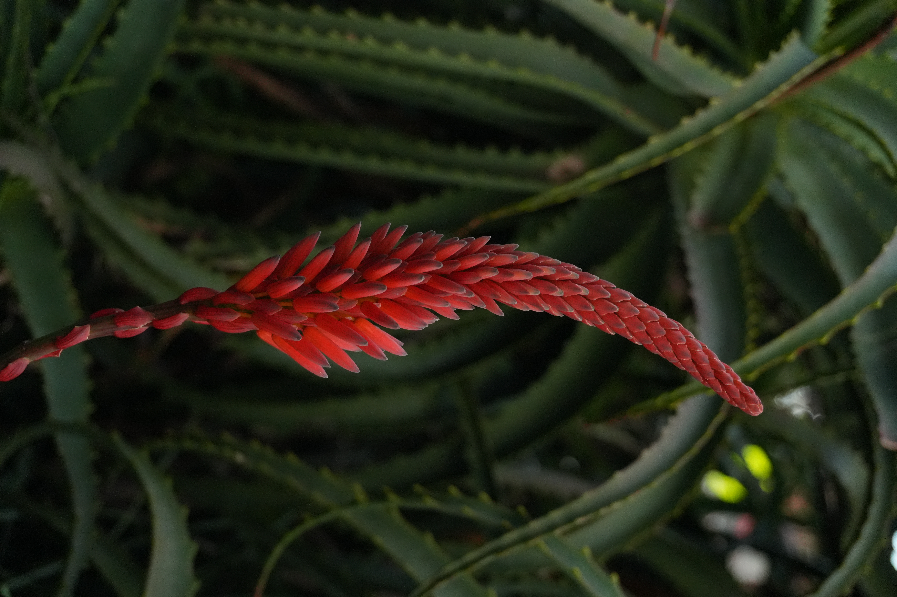
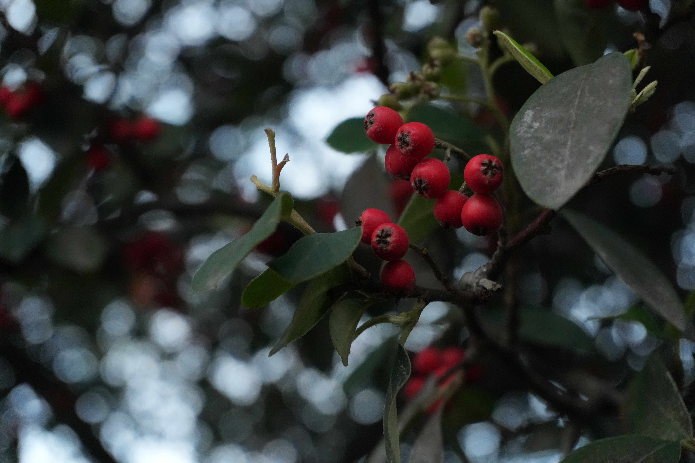
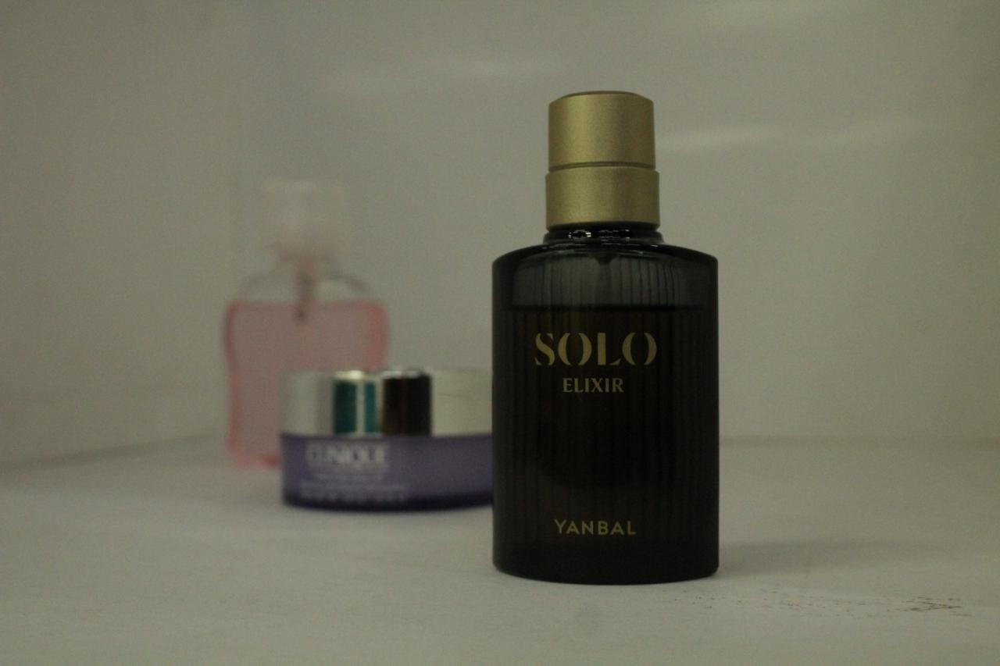
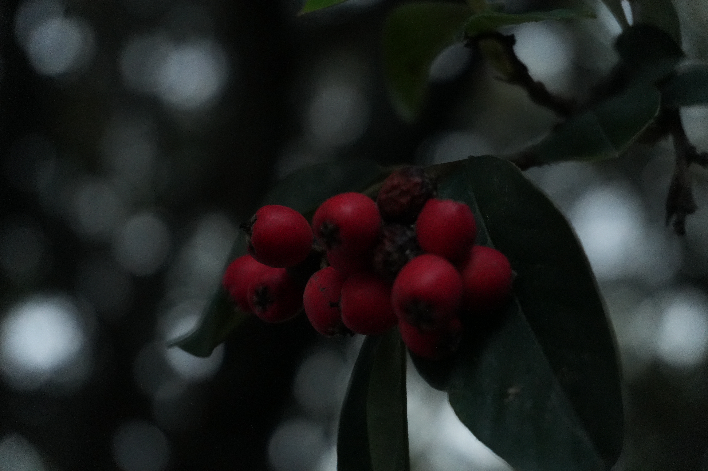
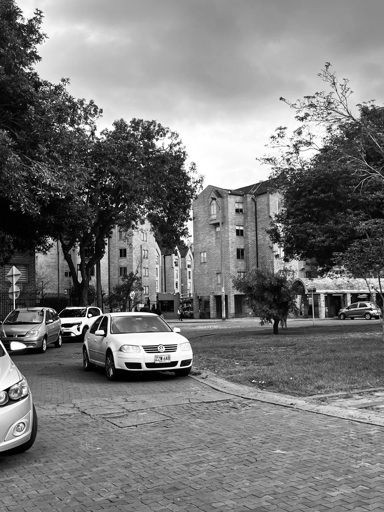
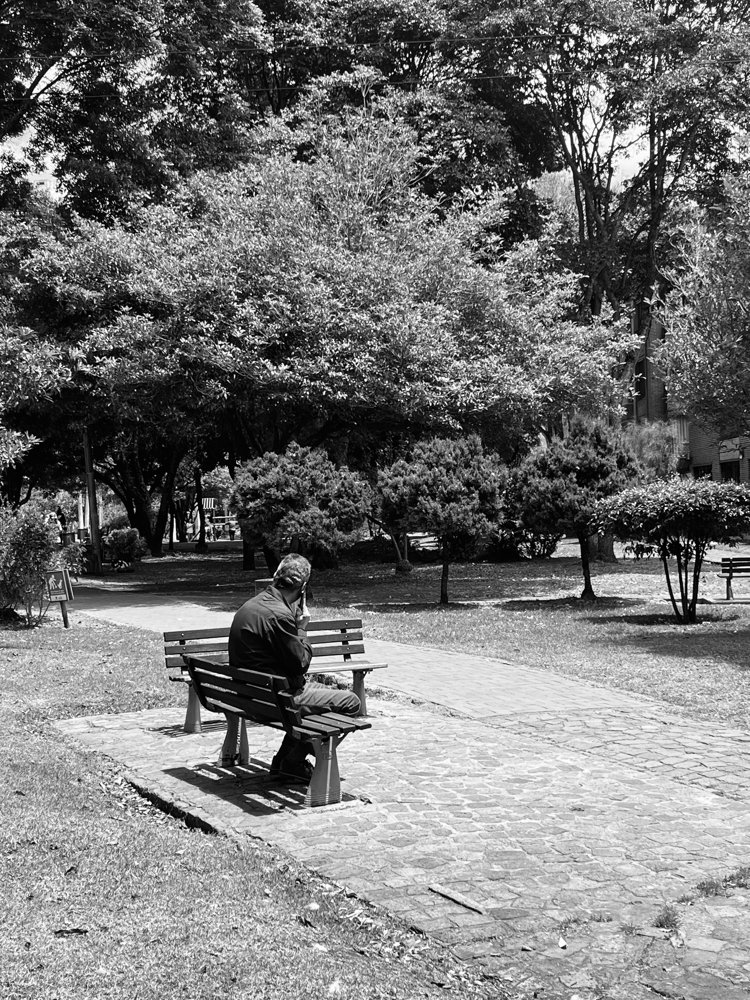
Manual de marca desarrollado como parte del proceso de construcción de identidad visual de una marca personal.
Explora la construcción visual, paleta, tipografía, logotipo y lineamientos de aplicación de la marca.
Presentación audiovisual del proceso y resultado del proyecto de diseño web.
Diseño responsive, arquitectura visual y desarrollo de una experiencia digital enfocada en presentar proyectos de manera clara elegante y atractiva.
Abrir video ↗Escucho tu historia, objetivos y necesidades.
Construyo conceptos, referencias y rutas visuales.
Diseño, produzco y ajusto cada detalle.
Organizo los archivos y acompaño su aplicación.
Cuéntame qué quieres comunicar y encontraremos la mejor forma de hacerlo visible.